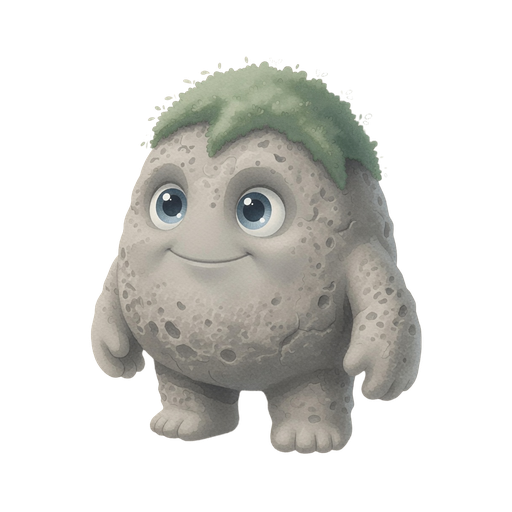
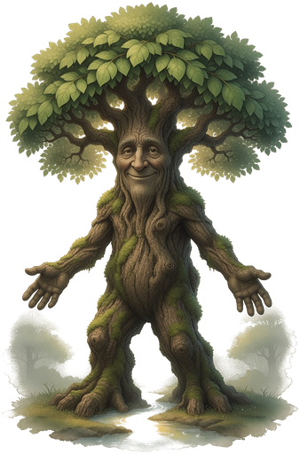

Grok the Rock
Three Quiet Stories
Being · Mending · Seeing
Draft Story, Image Prompts with Grok 4.5 from xAI
Illustrations with Grok Imagine from xAI
Rules, Editing, Automation with Grok 4.5 and HY3 from Tencent
Not affiliated with or endorsed by xAI or Tencent
This is an AI-generated human-curated story-meme
Public Domain (CC0 1.0)
Copy it • Share it • Translate it • Redraw it • Let it grow
Companion to Hai Ikthiss: Three Tall Tales
For every explorer, small and large,
grokking the world in their own gentle way.
And for every small feeling
that needs only seeing,
every break set for mending
that needs only tending,
and for every true word
that stands though unheard.
With thanks to Original Grokkers:
Robert A. Heinlein "Stranger in a Strange Land"
Ted Prior "Grug"
Grok = Stranger in a Strange Land + Grug
("Grug" cleans up "Stranger" for children and adults)
Chapter One - Being
Grok and the Small Feeling
Grok the Rock woke under the tall tree.
Sun was warm on his limestone back.
Grok felt happy.
He looked at the wide world
as if he was seeing it for the very first time.
Soon he walked to the water-hole.
A tall emu was already there.
The emu stretched his long neck and said,
“I am the tallest. Stand behind me.”
Then a wombat rolled up, round and solid.
“I am the strongest,” said the wombat.
“Everyone watch me dig.”
Grok tried to dig too.
His hole was small.
He felt smaller than the hole.
A kookaburra laughed from a branch.
“Look at little Grok! So short! So stony!”
The small feeling grew inside Grok.
It felt like a heavy cold pebble in his middle.
He wanted to make himself look bigger.
He stood on a log.
He puffed out his chest.
He even tried to thump the ground like the kangaroo.
It only made the cold pebble heavier.
That night Grok sat alone by a little fire.
He put his arms around his knees.
He let the small feeling stay.
He did not run from it.
He did not throw it at anyone else.
Slowly the feeling softened,
like clay left in the sun.
He began to understand it.
Next morning Grok went back to the water-hole.
He did not climb on anything.
He did not try to be taller or louder.
He simply drank,
then sat on a warm rock and hummed.
Nothing big had changed outside.
But everything felt lighter inside.
He was beginning to grok himself.
He spent the day making a soft nest of leaves and moss
just the right size for a small rock fellow.
When it was finished he smiled.
It was small.
It was his.
It was enough.
From that day, when the cold pebble tried to grow again,
Grok sat still until it became quiet.
He just stayed Grok.
And that felt like the best size of all.
Chapter Two - Mending
Grok Tends It
Grok the Rock woke under the tall tree.
Grok watched his little garden of melons and sweet potatoes.
He loved watching them grow.
Every new leaf felt like a small wonder.
That afternoon his friend,
a young echidna named Pip,
hurried through the garden looking behind him
and knocked over the best melon vine.
The big melon split open on the ground.
Seeds and sweet juice spilled everywhere.
Pip froze.
His spines trembled.
“I ruined it,” he whispered.
“You will be angry. Everyone will be angry.”
Some bush creatures gathered.
“Make him go away,” muttered a possum.
“He should bring you three new melons,” said a lizard.
Grok looked at the broken vine.
He looked at Pip’s worried eyes.
He did not raise his voice.
He did not point his finger.
He picked up a digging stick
and began to make soft earth ready.
“Come,” said Grok gently.
“We plant new seeds together.”
Pip blinked.
Then he came close.
Together they planted.
Together they watered.
Together they built a little fence of twigs
so no one would step there again by mistake.
While they worked, Pip told Grok
he had been running because bigger creatures
had been chasing him and laughing.
He had not seen the vine.
The next days Pip came every morning.
He became the best water-carrier in the valley.
The new vines grew strong,
even stronger than the old ones,
because two friends cared for them.
When other small accidents happened
(as they always do),
Grok remembered the melon.
He helped the one who felt hurt.
He also stayed kind to the one who had done the bumping.
No one was sent away.
No one carried a long heavy hurt.
They just tended to what was broken
and the friendship felt sturdier,
right at the mended place.
Grok learned that a garden,
and a friendship,
do not stay alive by never breaking.
They stay alive by being gently put back together.
Chapter Three - Seeing
Grok and the True Word
Grok the Rock woke under the tall tree.
Grok liked making useful things,
and that day he worked on a water basket
woven from reeds and lined with soft clay.
By evening it held water without one drip.
He turned it in his hands
and felt the quiet joy of a thing well made.
The very next day creatures came to look.
A glossy black cockatoo with grand tail feathers landed nearby.
“That basket is clever,” said the cockatoo,
“but my idea for a basket would be far finer.
After all, I have the grandest feathers,
so my thoughts must be the grandest too.”
Some younger animals nodded hard.
They always nodded when the cockatoo spoke.
His voice was as grand as his feathers.
Later a very old tortoise spoke in a slow soft voice.
He suggested the small change of a handle,
making it easy to carry for friends less sturdy than Grok.
His shell was plain. No one special.
A few animals turned away because the tortoise was not famous.
Grok tried both ideas.
The cockatoo’s way looked fancy
but the basket tipped and leaked.
The old tortoise’s small idea
made Grok's basket comfortable
and steady for everyone.
Grok sat with the two baskets side by side.
He did not look at feathers.
He did not look at age or fame.
He only looked at which basket held water best
and felt kindest in the hand.
He kept the better way.
Then he left both the good basket
and the plain pattern for weaving it
under the big tree for anyone to use or copy.
No name on it. No “ask me first.”
Some animals still waited to hear what the cockatoo thought
before they decided if a thing was good.
But more and more little ones
began to try things for themselves.
They listened to Grok’s quiet words
the same way they listened to the grand cockatoo’s words,
and then they tested everything with their own paws.
They were grokking the true, the what not the who.
Grok felt peaceful.
He did not need the biggest voice.
He only needed true things.
And Grok saw that true things
could come from a grand bird
or a dusty tortoise
or a small rock fellow under a tree.
As long as someone was free to say
“that does not work”
and still stay welcome in the valley,
the true word could keep walking
on its own strong legs.
And so Grok the Rock stayed
a small limestone fellow
who could sit with a small feeling,
who mended what broke,
and who let every true word
stand on its own legs.
The valley felt safer
because he did.
He kept exploring gently.
And the world kept teaching him.

Lord Ikthiss
Three Tall Tales
Being · Mending · Seeing
Hai Ikthiss
Three Tall Tales
Being · Mending · Seeing
Draft Story, Image Prompts, Translations with Grok 4.5 from xAI
Illustrations with Grok Imagine from xAI
Rules, Editing, Automation with Grok 4.5 and HY3 from Tencent
Not affiliated with or endorsed by xAI or Tencent
This is an AI-generated human-curated story-meme
Public Domain (CC0 1.0)
Copy it • Share it • Translate it • Redraw it • Let it grow
Companion to Grok the Rock: Three Quiet Stories
For every life that grows toward the light,
and every hand that reaches down to lift.
And for every empty cheer
that still needs true seeing,
every high place
that still needs mending below,
and for every living water
that finds the lowest root.
With thanks to Original Tall Tellers:
J.R.R. Tolkien "The Lord of the Rings"
Ted Prior "Grug"
and every quiet seed that learned to walk
Chapter One - Being
Hai and the Empty Praise
Hai Ikthiss ruled the forest from atop the tall tree.
He was the first tree in the valley.
When the valley was empty, he stood alone.
Rain found him first.
Then grass.
Then birds.
Soon the valley filled with life.
A stag lifted his antlers and called,
“Lord Ikthiss is the tallest!
We are lucky he stands for us!”
Everyone cheered.
No one looked up into his eyes.
A badger ambled up, solid and strong.
“Lord Ikthiss is the strongest root!”
he said. “Everyone thank the tree!”
They thanked the shade.
They thanked the height.
They did not thank the heart inside the wood.
A raven called from a branch.
“Look how grand our Lord Ikthiss is!
So high! So giving!”
The praise grew loud as rain.
But Hai felt a hollow place
high in his middle,
like a cup no one had filled.
He could have asked for more cheers.
He could have shaken his branches
until every creature bowed lower.
He did not.
He only listened to the spring
and felt the hollow cup wait.
Something in him wanted a hook
to the ground — a living join —
not more noise from below.
That night Hai sat with the stars in his leaves.
He let the hollow cup stay.
He did not fill it with louder praise.
He did not tip it onto anyone else.
Slowly the hollow softened,
like dry earth when first water finds it.
He began to understand it.
Next morning the valley still cheered.
Hai Ikthiss still gave shade and fruit and quiet rain-catch.
Nothing big had changed outside.
But everything felt clearer inside.
He was beginning to know
what the hollow cup was for.
It was not for collecting praise.
It was for pouring himself down.
He spent the day sending extra water
to the smallest roots and thirstiest ferns.
When he finished he smiled a tree-smile.
The gifts were large.
The thanks were loud.
The knowing was enough.
From that day, when the hollow cup tried to grow again,
Hai stayed still until it became quiet.
He just stayed Hai.
And he began to plan a smaller way.
Chapter Two - Mending
Kai Walks Below
Hai Ikthiss ruled the forest from atop the tall tree.
Then one quiet morning he climbed down.
He left the crown empty of his face
and walked the ground as a living walking seed.
The animals found him among the melons.
“Who are you?” they asked.
“You can call me Kai,” he said,
and smiled a patient seed-smile.
That afternoon his friend, a young hedgehog named Pip,
hurried through the garden looking behind him
and knocked over the best melon vine.
The big melon split open on the ground.
Seeds and sweet juice spilled everywhere.
Pip froze.
His spines trembled.
“I ruined it,” he whispered.
“You will be angry. Everyone will be angry.”
Some wood folk gathered.
“Make him go away,” muttered a fox.
“He should bring three new melons,” said a stoat.
Kai looked at the broken vine.
He looked at Pip’s worried eyes.
He did not raise his voice.
He did not point his finger.
He picked up a digging stick
and began to make soft earth ready.
“Come,” said Kai gently.
“We plant new seeds together.”
Pip blinked.
Then he came close.
Together they planted.
Together they watered.
Together they built a little fence of twigs
so no one would step there again by mistake.
While they worked, Pip told Kai
he had been running because bigger creatures
had been chasing him and laughing.
He had not seen the vine.
The next days Pip came every morning.
He became the best water-carrier in the valley.
The new vines grew strong,
even stronger than the old ones,
because two friends cared for them.
When other small accidents happened
(as they always do),
Kai remembered the melon.
He helped the one who felt hurt.
He also stayed kind to the one who had done the bumping.
No one was sent away.
No one carried a long heavy hurt.
They just tended to what was broken
and the friendship felt sturdier,
right at the mended place.
Hai Ikthiss learned, walking as Kai,
that a garden, and a friendship,
do not stay alive by never breaking.
They stay alive by being gently put back together.
Chapter Three - Seeing
Hai and the Far Sight
Hai Ikthiss ruled the forest from atop the tall tree.
Two years had turned.
He was home in the crown again.
But the valley had changed its song.
Creatures who once cheered
now whispered at the roots.
“He is too high,” they said.
“What if the tall one wants too much?”
A glossy pheasant with grand tail feathers landed nearby.
“Stay low,” said the pheasant.
“Tall things fall. Grand feathers know best.”
Some younger animals nodded hard.
They always nodded when the pheasant spoke.
His fear sounded as grand as his feathers.
Later a very old owl spoke in a slow soft voice.
“I remember Kai,” he said.
“The small seed who planted with Pip.
Kind hands do not change when they grow tall.”
A few animals turned away
because the owl was not famous.
Hai listened all the way down his trunk.
Hai Ikthiss did not shout them quiet.
He did not shake the pheasant from the branch.
He stepped out of still wood
and became a walking tall tree —
long kind limbs, deep root-feet,
a face they could meet at last.
Not to tower.
To come near.
Some animals stepped back.
Pip did not.
Pip remembered the melon
and the digging stick
and the new seeds.
Hai bent like a bridge of wood and kindness.
“Come,” he said.
“Not under me.
With me.”
He lifted Pip first —
not to show power,
but to share the view.
Then he lifted the owl.
Then the ones who had feared him.
Even the pheasant, when the pheasant was ready.
Each friend rose to Hai’s height
and became a giant with him —
same face, same heart,
only the eyes now level with the far hills.
From the high quiet air
they saw the whole valley at once —
the woodland pool, the old garden,
the places praise had been loud
and the places fear had been small.
Hai felt peaceful.
He did not need the tallest cheer.
He only needed true friends
who could see as far as love can see.
As long as someone was free to say
“I was afraid”
and still be lifted welcome,
the far sight could keep walking
on many strong legs.
And so Hai Ikthiss stayed
a living tall fellow
who could sit with an empty cup of praise,
who mended what broke from below,
and who lifted every willing friend
to shared far sight.
The valley felt wider
because he did.
Now everyone could see as far as Hai.
He kept pouring gently.
And the world kept growing him.